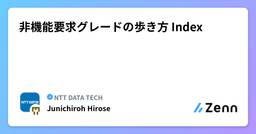

NTT DATA TECHのフィード
https://zenn.dev/p/nttdata_tech
NTT DATA公式アカウントです。 技術を愛するNTT DATAの技術者が、気軽に楽しく発信していきます。 当社のサービスなどについてのお問い合わせは、 お問い合わせフォーム https://nttdata.com/jp/ja/contact-us/ へお願いします。
フィード

非機能要求グレードの歩き方 Vol.8 C2保守運用(後半)
NTT DATA TECHのフィード
30年以上にわたり金融IT基盤に携わる中で得た経験と知識をもとに、「やらかしがちな」技術的課題について、IPA[1]の非機能要求グレード[2]に沿って解説します。※筆者は非機能要求グレード初版の執筆に関わった経験があり、行間を含めて解説します。 全体構成「非機能要求グレードの歩き方」シリーズ全体の構成は、「非機能要求グレードの歩き方 Index」を参照ください。本記事(vol.8)では、Vol.7と併せて、「C.2 保守運用」に焦点を当てて解説します。 C.2 保守運用（Vol.7再掲）中項目「C.2 保守運用」では、システムを維持するために必要な保守作業の要件を定義し...
30分前

pg_duckdbとDuckLakeがもたらすOLAP統合の未来 61
61
NTT DATA TECHのフィード
注目を集めるPostgreSQL＋Analytics先日、SnowflakeとDatabricksのそれぞれの年次イベントでPostgreSQLに関連する企業の買収が大々的に発表されました。両社は分析系（OLAP）のソリューションを提供する比較的大きなベンダーであり、過去にはOLTP系への進出を目指したデータストアの開発が注目されたこともありました（SnowflakeのUnistoreが典型です）。彼らは今後、PostgreSQLを自社がカバーできていなかった領域で適用することで、現在のメガクラウドのようにOLTP用途のRDBとOLAPのソリューションを統合してくることが予想さ...
3日前

Markdownで書いた社内ドキュメント、どう共有してる？ AWSで構築するセキュアな自動公開パイプライン 97
NTT DATA TECHのフィード
はじめにはじめまして。NTTデータの奥村です。最近は内部向けのちょっとしたドキュメントをMarkdown形式で記載することは結構あるのかなと思います。GitHubなどのリポジトリサービスやNotionなどのドキュメント共有サービスを全員が利用できればよいのですが、コストや組織のポリシーなどの関係でそうしたサービスが利用できないケースだと、関係者限定でMarkdownのファイルを見やすい形で共有するのに困ることがあります。本記事では、上記のようなケースで役に立つ仕組みをAmazon Web Services (AWS)を利用して構築する方法を紹介させていただきます。 全体構成...
3日前

新入社員がInterop Tokyo 2025で学ぶ最新セキュリティ技術
NTT DATA TECHのフィード
2025年6月に開催されたInterop Tokyo 2025に訪問しました。本記事ではInterop Tokyoとはどのようなものか、そしてその中で印象に残った技術やトレンドを通じて得た学びや気づきを整理し発信しています。読んでくださる方の参考になれば幸いです。 はじめにはじめまして！2025年度からNTT DATAに入社しました、新入社員の坪田です。大学院ではLarge Language Model(LLM)を用いた研究をする傍ら、Web開発のアルバイトを行っておりました。入社後はセキュリティを中心としたコンサル業務がメインとなっているのですがセキュリティについては疎く...
5日前

SQLでAI分析！Snowflake Cortex AISQLの使い方とユースケース8選
NTT DATA TECHのフィード
✨はじめに先日サンフランシスコで開催されたSnowflake Summit 2025において、Cortex AISQLという革新的な機能が発表されました。https://www.snowflake.com/en/news/press-releases/snowflake-introduces-cortex-aisql-and-snowconvert-ai-analytics-rebuilt-for-the-ai-era/Cortex AISQLによって生み出される価値については下記のように述べられています。SQLをSnowflakeのAI機能とともに活用することで、アナリス...
5日前

【真実はいつもひとつ！】トラブルシュートの3つの心得
NTT DATA TECHのフィード
はじめに私は仕事柄、システム開発・運用の中で様々なトラブルシュートを行ってきたのですが（最近はもう…）、そこで得た自分なりの心得を伝えたいなと思ったため、この記事でまとめてみます。とはいえ、トラブルシュートでは、扱っている技術スタックや事象によって、使用するデバッグツールやテクニックが大きく変わります。そのため、本記事では様々あるツールやテクニックではなく、もう少し抽象的なトラブルシュート全般に通じる「考え方」を書いていこうと思います。!ベテランのエンジニアの方ではなく「基礎知識はあるがトラブルシュート経験はこれからな若手エンジニア」あたりを想定した内容になっています。...
6日前

非機能要求グレードの歩き方 Index 1
NTT DATA TECHのフィード
はじめに本連載記事「非機能要求グレードの歩き方」シリーズでは、30年以上にわたり金融IT基盤に携わる中で得た経験と知識をもとに、「やらかしがちな」技術的課題について、IPA[1]の非機能要求グレード[2]に沿って解説します。（※筆者は非機能要求グレード初版の執筆に関わった経験があり、行間を含めて解説します。）併せて「😱あったら怖い本当の話」として、実際に起きたことを、脱色デフォルメしたフィクションにして紹介します。 共通の注意事項（用語説明）非機能要求グレード表には、多くの項目が含まれています。大項目(6)、中項目(35)、小項目(118)、メトリクス(238)用...
7日前
中央集権からの脱却？データスペースが叶える新たなRAGアーキテクチャ
NTT DATA TECHのフィード
はじめに今回は、前回のブログでご紹介した「データスペース」の応用事例の一つとして、データスペースを活用した新たなRAGのアーキテクチャをご紹介します。 想定読者LLMやRAGについてなんとなく知っている方新たなRAGのアーキテクチャに関心がある方データスペースとAIのインテグレーションに関心がある方 データスペースとは？データスペースとは、参加する組織・企業同士が互いに信頼できる仕組みのもとで、中央の管理者を置くことなく、ポリシーと契約に基づいて安全かつ自由にデータをやり取りできる分散型の枠組みを指し、現在欧州や日本で広がりを見せつつあります。データスペースは...
7日前

SQLと自然言語のハイブリッド！Snowflake AI FILTERを試してみた
NTT DATA TECHのフィード
はじめに2025年6月2日~6月5日で開催されたSnowflake Summit 2025において、ワクワクする新機能が多数発表されました。その中で発表されたCortex AISQLにおけるAI_FILTERが、手間暇かかる加工を省略できデータ活用のハードルを下げてくれるような機能と感じたため、早速試してみたいと思います！!紹介する機能は、執筆時点（2025年6月）でPublic Preview機能になります。 お試しに使うデータAI_FILTERを試すにあたって、回線のマスタと回線の障害報告を模したデータを作成しました。※お試し用なので、データとして不自然な点はご...
10日前
Snowflake Summit 2025で話題のSnowflake Openflowを試してみた
NTT DATA TECHのフィード
はじめにSnowflake Summit 2025、すごい盛り上がりですね！私は日本から参加者のブログやオンライン配信を追いかけて、一人でワクワクしています。数ある発表の中でも、Day2のKeynoteで紹介された「Snowflake Openflow」が特に印象的でした。本記事では、そのOpenflowを実際に触ってみた様子をお届けします。 1. Snowflake OpenflowとはSnowflake Openflowは、構造化テキスト、非構造化テキスト、画像、音声、動画、センサーデータなど、数百のプロセッサを搭載したあらゆるデータソースとあらゆる接続先を接続す...
11日前
TDX Tokyo参加レポート
NTT DATA TECHのフィード
TDX Tokyo 2025について2025年4月25日に Salesforceのテクノロジーイベントである TDX Tokyo 2025 (公式サイト) が開催されました。TDX Tokyo 2025 は、Salesforceの最新技術やトレンドを学ぶことができる貴重な機会です。今回のイベントの目玉として、Agentforceの紹介がありました。Agentforceとは、Salesforceが提供する自律型AIエージェント機能で、業務の自動化や効率化を支援します。このサービスは、チャットや業務プロセスの自動実行をAIが担当することで、従業員の作業負担を軽減します。また、Sal...
11日前
Alteryx Inspire2025 現地レポート DAY4 ～東洋エンジニアリング様のセッションとGrand Prix
NTT DATA TECHのフィード
Alteryx社主催のInspire2025に現地参加しましたので、イベントの内容についてご紹介します。本記事では我々NTTデータがAlteryx製品を通じて支援させて頂いている東洋エンジニアリング様のセッション内容とGrand Prix & Closing Celebrationについてご紹介させて頂きます。 東洋エンジニアリング様のご講演概要東洋エンジニアリング様がご講演されていたAlteryx Serverに関するベストプラクティスは具体的かつ実用的で、デモ動画を交えて非常に分かりやすくご説明されていました。講演日：5月15日（木）13:30-14:10（米国...
12日前
よく分からないまま、MCPを触ってみたら動いた!!
NTT DATA TECHのフィード
最近、普及が期待されているAIエージェント。これらが協調してタスクをこなすために欠かせないのが、「MCP（Model Context Protocol）」です。 米MicrosoftがWindowsへの実装を発表するなど、注目が集まるこの技術。 マックでMCPを動かしてみる——。そんなハッカソンが、会社近くのマクドナルドで開かれると聞き、超初心者として飛び込んできました。その時の体験を、備忘録も兼ねてレポートします。 MCPとはMCP（Model Context Protocol）は、AIエージェントが「外部アプリケーション」と連携して作業するための、いわば共通言語。 例えば、メ...
13日前
非機能要求グレードの歩き方 Vol.7 C2保守運用(前半)
NTT DATA TECHのフィード
30年以上にわたり金融IT基盤に携わる中で得た経験と知識をもとに、「やらかしがちな」技術的課題について、IPA[1]の非機能要求グレード[2]に沿って解説します。※筆者は非機能要求グレード初版の執筆に関わった経験があり、行間を含めて解説します。 全体構成「非機能要求グレードの歩き方」シリーズ全体の構成は、「非機能要求グレードの歩き方 Index」を参照ください。本記事(vol.7)では、Vol.8と併せて「C.2 保守運用」に焦点を当てて解説します。 C.2 保守運用中項目「C.2 保守運用」では、システムを維持するために必要な保守作業の要件を定義します。 📌現状の...
14日前
DatabricksのOLTPデータベース『Lakebase』を使ってみた！
NTT DATA TECHのフィード
はじめにDatabricksビジネス推進室の井能です。現在サンフランシスコで現地参加しているDatabricksの年次カンファレンス『Data+AI Summit 2025』にて、フルマネージドのPostgresデータベースをホストする機能である『Lakebase』が発表されました。https://www.databricks.com/product/lakebasehttps://www.databricks.com/blog/what-is-a-lakebase2025年3月にはサーバレスPostgresを提供する『Neon』をDatabricksが買収したことでも話題...
16日前
Prisma® Accessの概要とその接続に関して
NTT DATA TECHのフィード
はじめに本投稿で記載している内容は、以下２点になります。Prisma Accessの概要ネットワーク目線で見た特徴なお、Prisma Access自体高頻度でアップデートが行われており、利用可能な機能や利用時における制限が変更になってる可能性があります。最新情報はパートナーやメーカーサイトから入手してください。 Prisma Accessとは？Prisma AccessはSASE（Secure Access Service Edge）ソリューションの一つで、パロアルトネットワークス社が提供するクラウド型の次世代FWです。そして、このサービスを導入するユーザに対して...
18日前
Alteryx Inspire2025 現地レポート DAY3 メインセッション ～「Alteryx ONE」と「新機能紹介」
NTT DATA TECHのフィード
Alteryx社主催のInspire2025に現地参加しましたので、イベントの内容についてご紹介します。本記事では5月14日（水）のメインセッションの中で発表された「Alteryx ONE」と「新機能」についてご紹介します。 Alteryx ONEの発表Alteryx ONEはクラウド、デスクトップ、AI、自動化といったあらゆる機能を単一のプラットフォームに統合します。 Alteryx ONEで一元管理ワークフロー、データ、接続、通知等の各アセットをAlteryx ONEで一元管理が可能となります。 統合ライセンスDesigner Cloud、Designer、...
19日前
Alteryx Inspire2025 現地レポート DAY1,2 ～トレーニングセッション
NTT DATA TECHのフィード
はじめにこんにちは、布川です。Alteryx社が主催しているInspire2025に現地参加してきました！そこで今回はユーザ向けのトレーニングセッションについてご紹介したいと思います。 ◆ Alteryx InspireとはAlteryx InspireはAlteryx社が2011年から年に一度開催しているユーザ向けのカンファレンスイベントです。Alteryx社の経営陣・開発陣をはじめデータアナリティクス分野の有識者が集まり、新機能の発表や技術セッション、トレーニング、Grand Prix（ワークフロー作成競技会）など、参加者を楽しませる多彩なイベントが開催されていま...
19日前
FortiGateVM on AWS でSD-WAN/ADVPN2.0を試す（第二回：ADVPN設定編）
NTT DATA TECHのフィード
はじめにNTTデータ セキュリティ＆ネットワーク事業部 テクニカル・グレードの田中智志です。本BlogではAmazon Web Services(AWS)上にデプロイしたFortiGateVMを含む構成でADVPN2.0とSD-WANのトラフィックコントロールについて試した内容を紹介しています。第一回は検証構成と使用するテクニック（BGP on Loopback、IKE extension:exchange-ip-addrv4、RR（Route Reflector）レスのダイナミックBGP）およびそのメリット、FortiGateVMのAWS上でのデプロイまで解説しました。第二回と...
19日前
非機能要求グレードの歩き方 Vol.6 オンライン編-C1通常運用
NTT DATA TECHのフィード
30年以上にわたり金融IT基盤に携わる中で得た経験と知識をもとに、「やらかしがちな」技術的課題について、IPA[1]の非機能要求グレード[2]に沿って解説します。※筆者は非機能要求グレード初版の執筆に関わった経験があり、行間を含めて解説します。 全体構成「非機能要求グレードの歩き方」シリーズ全体の構成は、「非機能要求グレードの歩き方 Index」を参照ください。本記事では、オンラインシステムにおける「C.1 通常運用」に焦点を当てて解説します。 C.1 通常運用中項目「C.1 通常運用」では、監視やバックアップなど定常的に行う運用の要件を定義します。下表は、大項目「C...
20日前